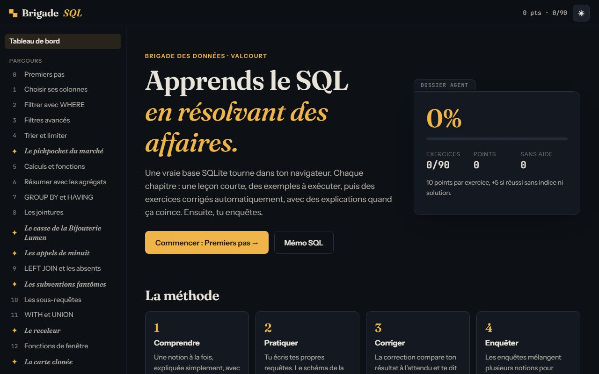

N° 01, Bases de données
Brigade SQL
Le SQL s’apprend ici en menant l’enquête dans la ville fictive de Valcourt. Chaque requête s’exécute sur une vraie base, et le correcteur explique précisément ce qui ne va pas.
- Contenu
- 14 chapitres et 6 enquêtes
- Notions
- De
SELECTaux fonctions de fenêtre - Accès
- En ligne, sans installation